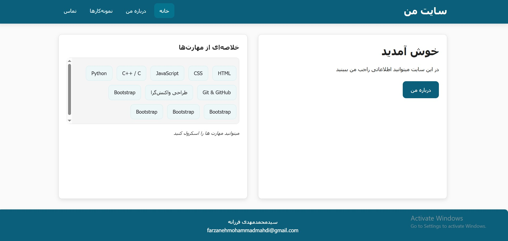

وبسایت شخصی چندصفحهای
یک وبسایت استاتیک چندصفحهای با استفاده از HTML و CSS خالص. در این پروژه از Flexbox و Grid برای چیدمان، از Media Queries برای طراحی واکنشگرا و از CSS Variables برای مدیریت رنگها و فونتها استفاده شده است.
HTML5
CSS3
Responsive